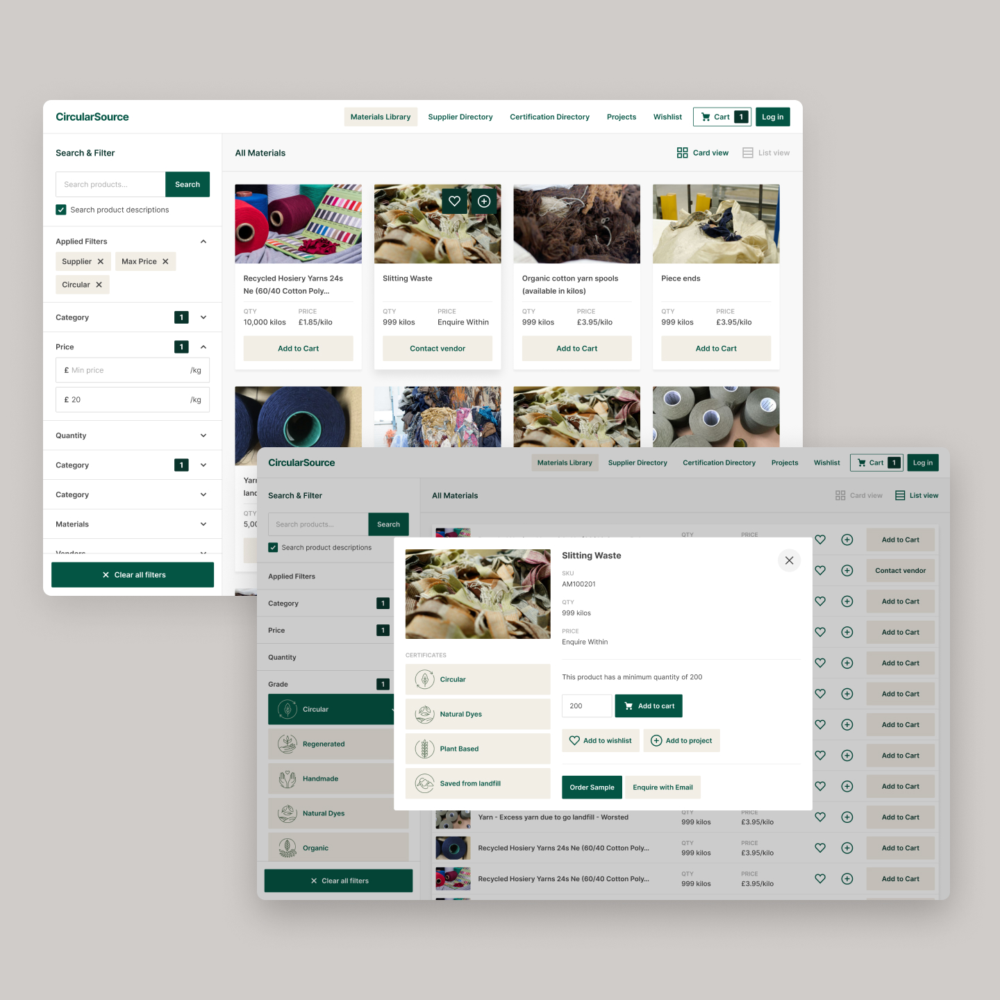
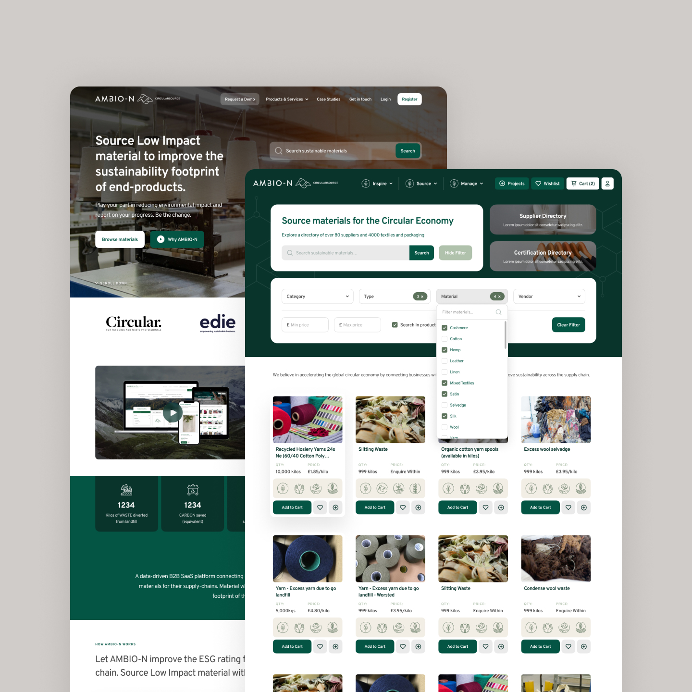
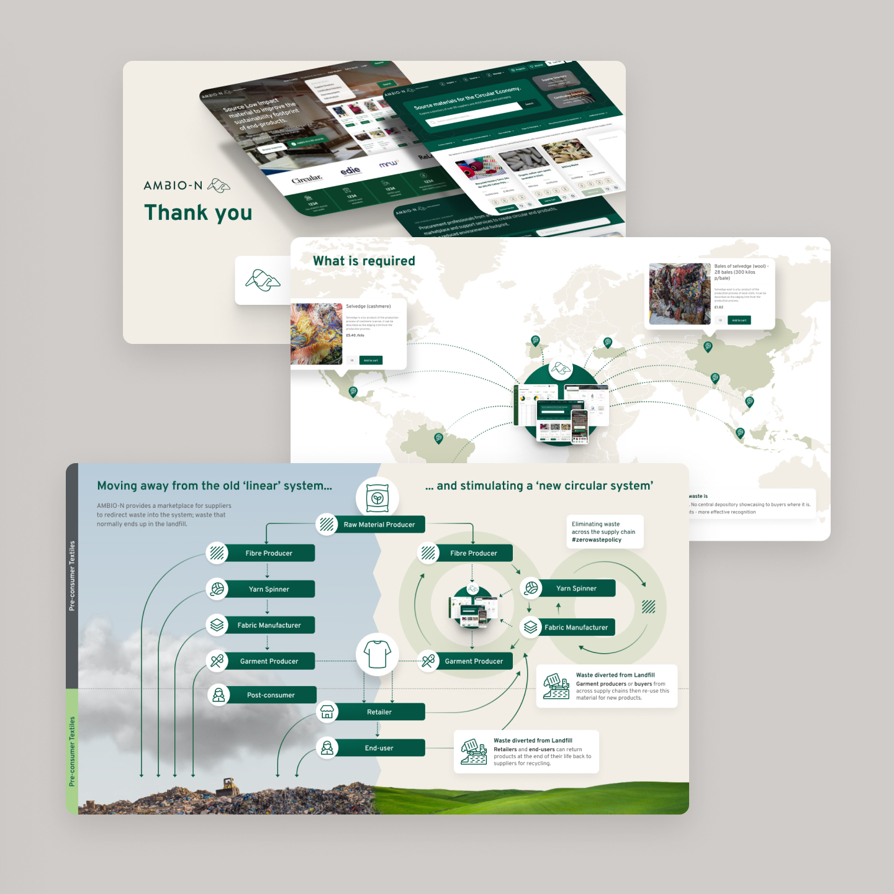
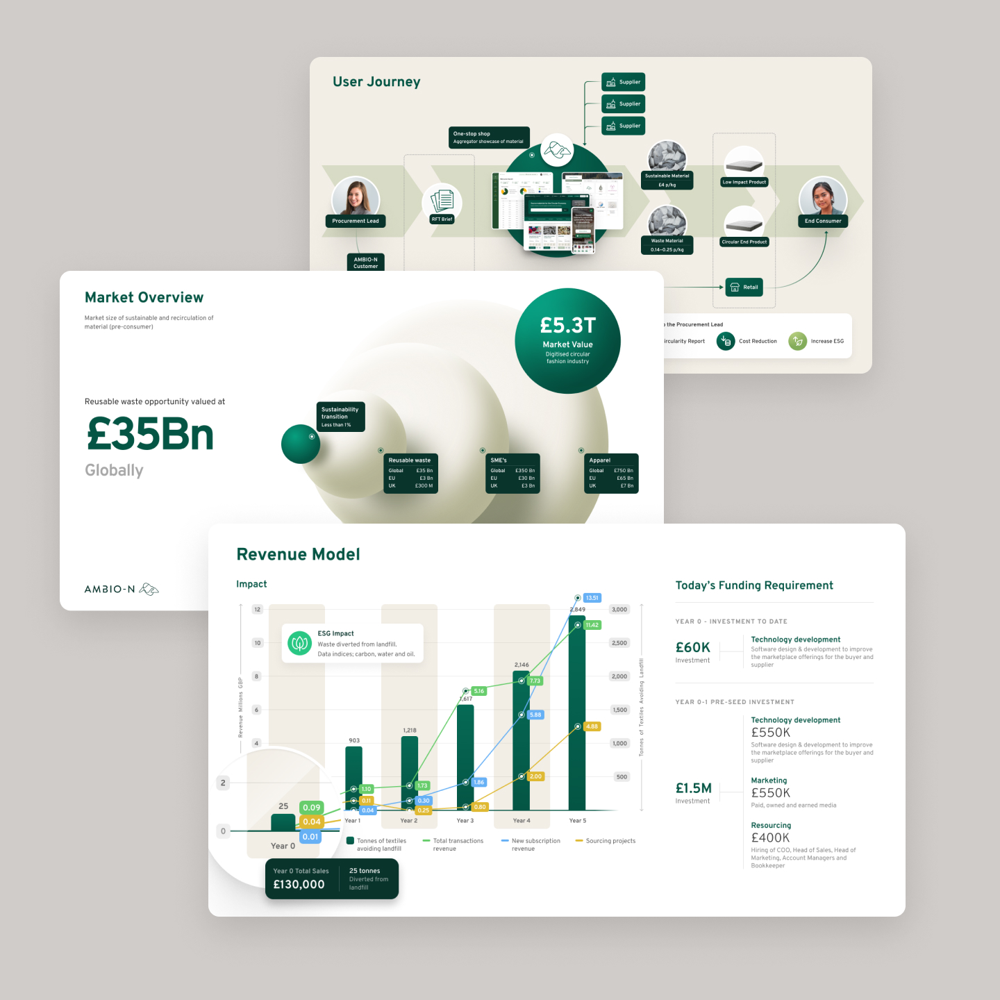
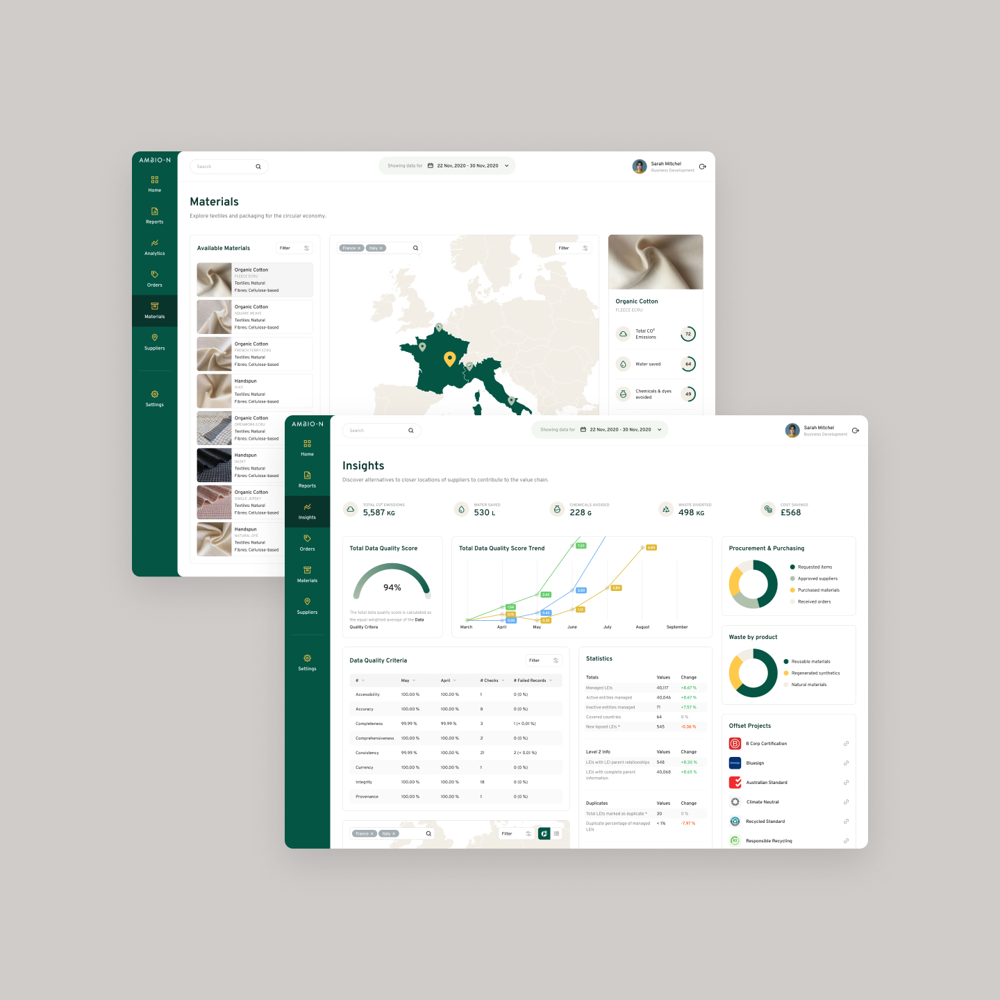

AMBIO-N
While working with AMBIO-N I I led UX design for their B2B marketplace, improving usability and consistency across procurement tools. Established a modular design system used across the platform and a new marketing site. Designed an easy to customise investor deck that helped the company secure £1.5M in funding.





Tasks and responsibilities
- UX/UI designRedesigned the marketplace interface to maximize usability and streamline the user experience.
- Design system overhaulUpdated outdated design styles and created a consistent, modern design system.
- Feature developmentDesigned and implemented powerful filtering, saving, and wishlist features to enhance user interaction.
- Marketing materialsUpdated the marketing website and created presentation decks and video marketing designs to ensure brand consistency.
- Sustainability integrationEnsured the platform effectively communicated product sustainability metrics (e.g., carbon footprint, origin, circularity).
Introduction
AMBIO-N is a platform that connects buyers with sellers of sustainable materials, helping brands and manufacturers improve the traceability and environmental footprint of their products. My role involved redesigning the marketplace and marketing website to improve usability, visual consistency, and functionality. I focused on creating a seamless experience for users to find, filter, and evaluate sustainable materials efficiently.
Key features and functionality
Marketplace redesign
- Search and filteringDesigned an intuitive search and filtering system to help users quickly find materials that meet their exact needs. Filters included sustainability metrics, origin, and circularity data.
- Product visibilityMaximized screen space to display product details, sustainability statistics, and vendor information clearly.
- Wishlists and saved itemsAdded features like saving items and creating wishlists to enhance user convenience.
Marketing website update
- Consistent brandingUpdated the website to align with the new design system, ensuring a cohesive brand identity.
- Improved navigationSimplified the user journey to make it easier for visitors to understand AMBIO-N's value proposition and services.
Sustainability metrics
- Product transparencyDesigned interfaces to display detailed sustainability data, such as carbon footprint, origin, and circularity, helping users make informed decisions.
Design challenges and solutions
Complex marketplace navigation The marketplace had a large and complicated inventory, making it difficult for users to find specific materials. Solution: Implemented advanced filtering and search functionality, allowing users to narrow down results based on sustainability metrics, material type, and vendor information.
Outdated design system The existing design was inconsistent and did not reflect the brand's modern, sustainable ethos. Solution: Created a new design system with a clean, modern aesthetic and consistent branding across all platforms.
Communicating sustainability Users needed clear and accessible information about the environmental impact of materials. Solution: Designed interfaces to prominently display sustainability metrics, such as carbon footprint and circularity data, ensuring users could easily evaluate materials.
Visual design and branding
- Design systemDeveloped a cohesive design system with a modern, minimalist aesthetic, emphasizing sustainability and transparency.
- Typography and color paletteUpdated the typography and color palette to reflect the brand's commitment to sustainability and professionalism.
- Illustrations and iconsCreated custom illustrations and icons to enhance the user experience and reinforce the brand's identity.
Documentation and handoff
- Wireframes and prototypesDelivered detailed wireframes and interactive prototypes to guide development.
- Design specificationsProvided pixel-perfect design specifications and assets for implementation.
- User flowsDocumented user flows for key features, such as search, filtering, and wishlist functionality.
Additional details
- Presentation decksDesigned presentation decks to communicate AMBIO-N's value proposition to stakeholders and clients.
- Video marketingCreated video marketing materials to showcase the platform's features and benefits.
Summary
Working on AMBIO-N was a rewarding but challenging experience, as it allowed me to design with a sustainability focused service design in mind. I enjoyed the challenge of creating a platform that not only looked great with a unique style but also empowered users to make environmentally conscious decisions.
The pitch decks were especially challenging as I had to distill the value proposition into a concise and compelling story and design a presentation deck that could be changed depending on the client, like slipping different slides for certain clients, different currencies for different countries so I had to devise a system to make it easy to change the deck based on all these different variables.